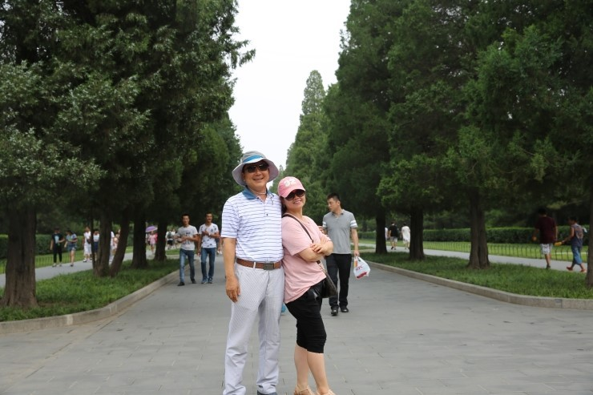

대광그룹 우수사원 및 우수품질분임조 가족동반 해외연수 !!
중국 북경 3박4일 여행이야기

중국 북경 해외연수 마지막날 이야기
아쉽다....벌써 마지막이라니...
떠나는 발걸음이 무겁당 ㅜㅜ
대표님!!! 열심히 할테니~
내년에도 또 부탁합니다 ^^
마지막을 기념하며 단체사진 !


 가족들의 베스트 포토제닉
가족들의 베스트 포토제닉





여행을 마치며
한국보다 더 덥고 습한 북경이지만 여행내내 맑고 쾌청한 날씨에 총32명 인원 중 어느하나 아프지않고
안전하고 즐겁게 여행을 즐길 수 있어 하늘이 대광그룹 여행을 돕는구나라고 느껴졌습니다.
대광그룹 직원들만의 여행이 아니라 직원들의 사랑하는 가족들과도 같이 한 여행이어서
좀더 돈독해지고 대광이 하나가 된 듯한 느낌의 여행이었죠~
앞으로도 이번여행에서 느꼈던 모든 감정들을 소중히 기억하고 아끼면서 지내도록 해야겠다는 생각과
대광그룹 직원이라는 자긍심..!! 
해년마다 이렇게 가족동반 해외여행을 실시할 계획이시라는 사장님의 말씀에
업무에 대한 열정이 백배는 북돋워지는 여행이었습니다.
항상 '사원과 더불어' 가 경영방침이신 대광그룹 한갑호 대표님께도 감사하고 감동받는 여행이었습니다.
감사합니다 !
최고였습니다~!!